We got tired! Always forgotten, always being useless weight. We jumped
from his pocket when he sat down. Now I am scattered on the floor —
finally free from the others.

I'm white, worn, with an unstable flame. I've passed through too many
hands to count. He thinks he lost me. Maybe. Or maybe I just moved on,
like I always do.

I've been stuck to my own protective paper for years, with colors
intact and glue perfectly fresh, but completely invisible at the
bottom of a box. I was drawn to mark a position and bring life to a
surface, but my owner's perfectionism condemned me to the safety of a
dome, where I continue waiting for a perfect moment that may never
come.
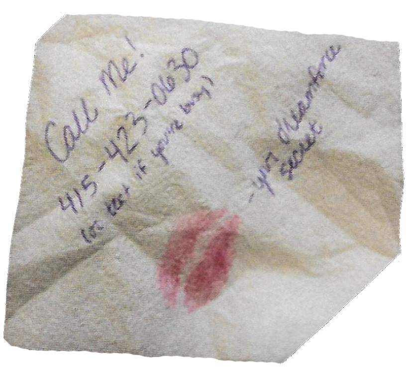
I was never meant to survive the evening. Just a napkin pulled from
beneath a drink, marked with a quick kiss and a number scribbled
before goodbye. He folded me carefully and slipped me into his pocket
like I was something precious. Weeks passed before he remembered to
call.

Always twisted, always pulled by the cord. Never with care. I am
white, simple, essential — but never valued. This time I was left
behind, coiled in some random outlet. Let's see how long she lasts
without me.
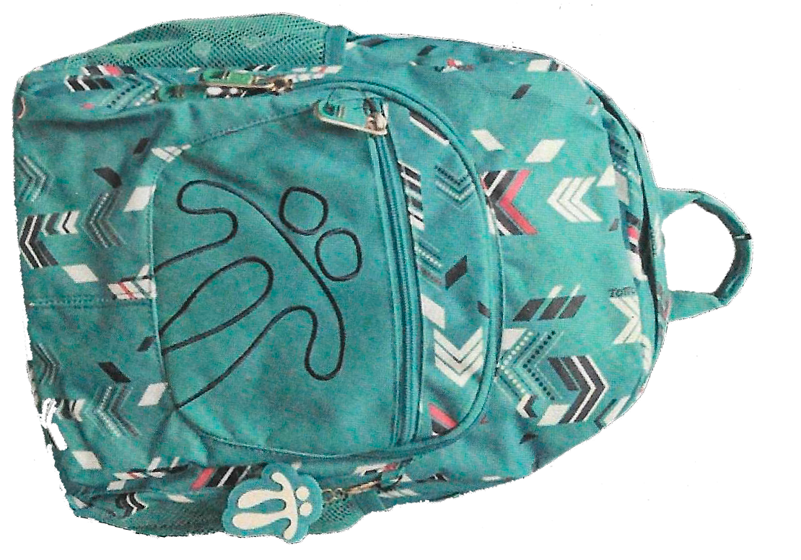
I am forgotten on the dusty floor of the bus stop, heavy with the
books and technology I carry on my back, but my true heart is a secret
hidden in the smallest pocket. Inside, I protect an aqua-green stone,
cold and smooth, which still smells of salt; we were abandoned to our
fate and now share the same weight of loneliness, waiting for our
straps and its colors to once again find the hands that knew how to
value us.
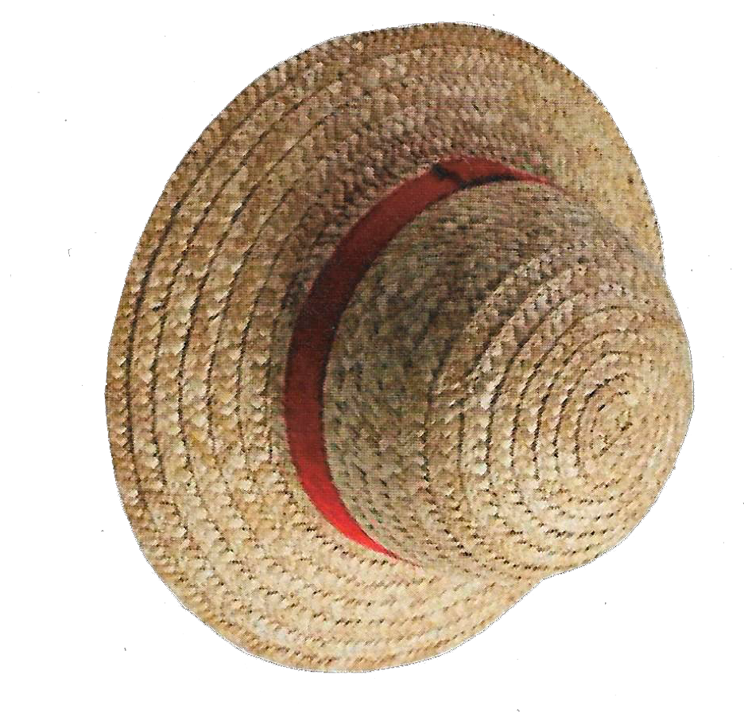
I broke free from the straw threads and rolled through the stubble of
the field, carried by a gust of wind that ripped me from my post. I
spent years protecting the scarecrow from the sun and the rain, but
now I am just an unraveled ball of wool on the ground, far from my
owner's head, unable to scare away even the smallest of birds.
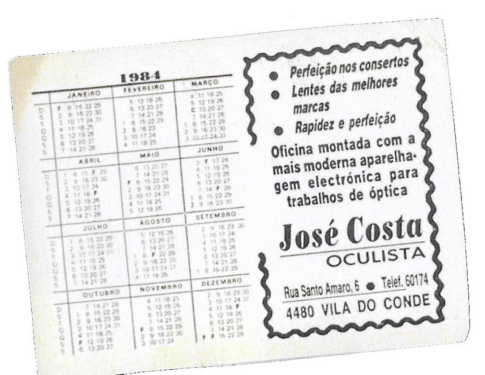
My pages are still crisp, filled with neat, handwritten appointments
for frame fittings and cataract checks, all stamped with the year 1984
in faded blue ink. I was meant to be the steady anchor of that
examination room, watching patients blink into the bright light while
my grid measured out their days. Instead, I was pulled down during the
cleanup and slipped behind the heavy filing cabinet. Now I lie here in
the dark, my grid useless and my numbers frozen in a past year,
listening to them ask what day it is while I hold the answer hidden in
the dust.
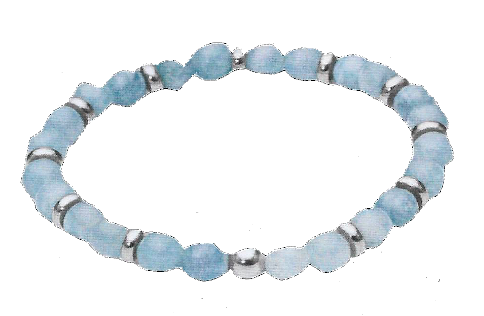
I wrapped around her wrist for three years, feeling her pulse beneath
me, marking the seasons with tiny scratches. Now I lie coiled on the
ground, a forgotten circle of memory. She bought a new one, something
shinier. I understand — I'm outdated, dull, a relic of a different
version of her life.
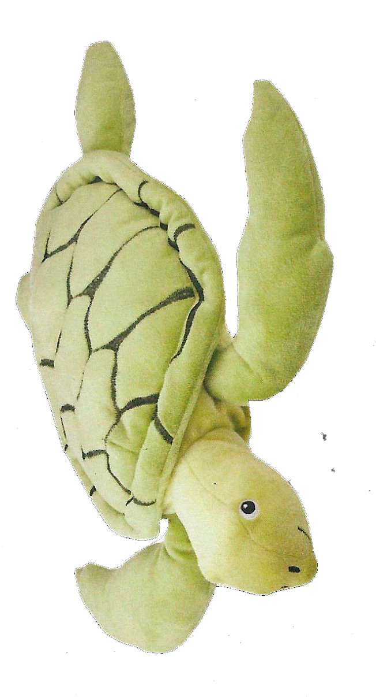
I was his favorite when he was five. My shell has been hugged a
thousand times, my little eyes stared at through countless goodbyes.
Now I sit on the top shelf of his childhood closet, waiting for him to
remember that I was once his entire world. But he's growing up, and
I'm just getting older.
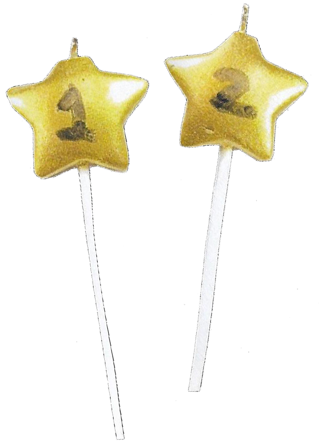
We were ready to shine and receive the wishes of the night, but we
were left forgotten at the bottom of the shopping bag, inside the
closet. We heard the nervous laughter and the timid applause echoing
through the dining room; we were made to be the center of attention,
but the party went on in the dark and the cake was blown out without a
flame… It was sad.
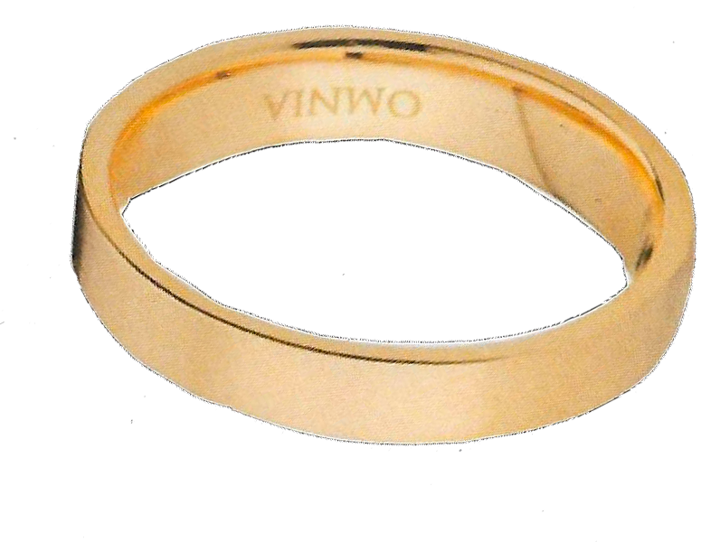
“Are you still there?” — I am… but it's not like before. I am golden,
smooth, a pair — or at least we should be. One day I was taken off
"just for a moment". We became separated. Funny how something made to
last forever… gets lost so easily.
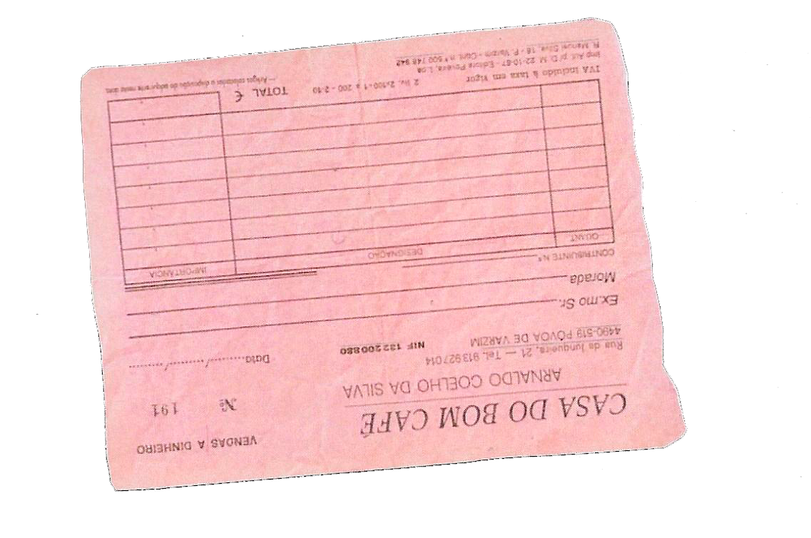
I am a ticket stub, faded pink, creased from being folded and unfolded
countless times. The date on me leads to a night that still makes her
smile. But he never asks about me anymore.
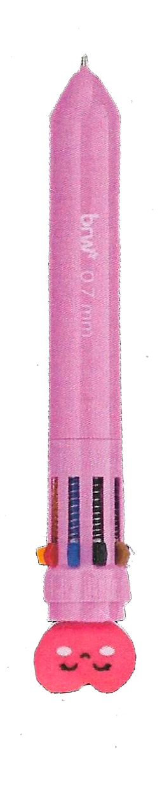
I have six colors, but I've only ever been used with one. The others
sit dormant inside me, forgotten like unused potential. Children love
me when I'm new, but grow bored before they discover all of what I can
be.
I fell into a dark corner of the coffee shop counter, with my paper
corners already worn and the image of the Little Poor Man of Assisi
turned toward the wood. I spent so much time kept close to my owner's
heart, serving as a safe harbor in moments of distress, and now I am
just a piece of illustrated paper, forgotten among cups and coins.
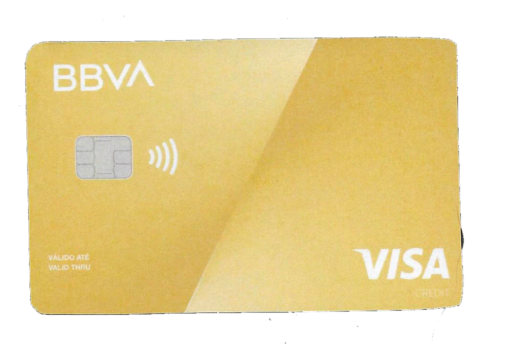
Her problem! I gleamed on the gray floor of the parking lot, right
under the wheel of a car, helpless for not being in the right place. I
was the symbol of security and the purchasing power kept in that
pocket, but my golden gleam ended up forgotten on the asphalt at the
exact moment when my owner needed me to take my responsibility at the
store counter.
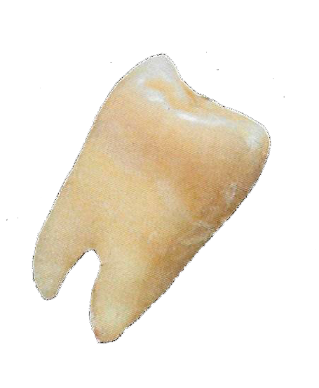
I fell. Literally. One day I was there, firm, white enough. The next…
loose. I was put away, forgotten, maybe thrown out. Strange how
something that was part of him… becomes disposable so fast.
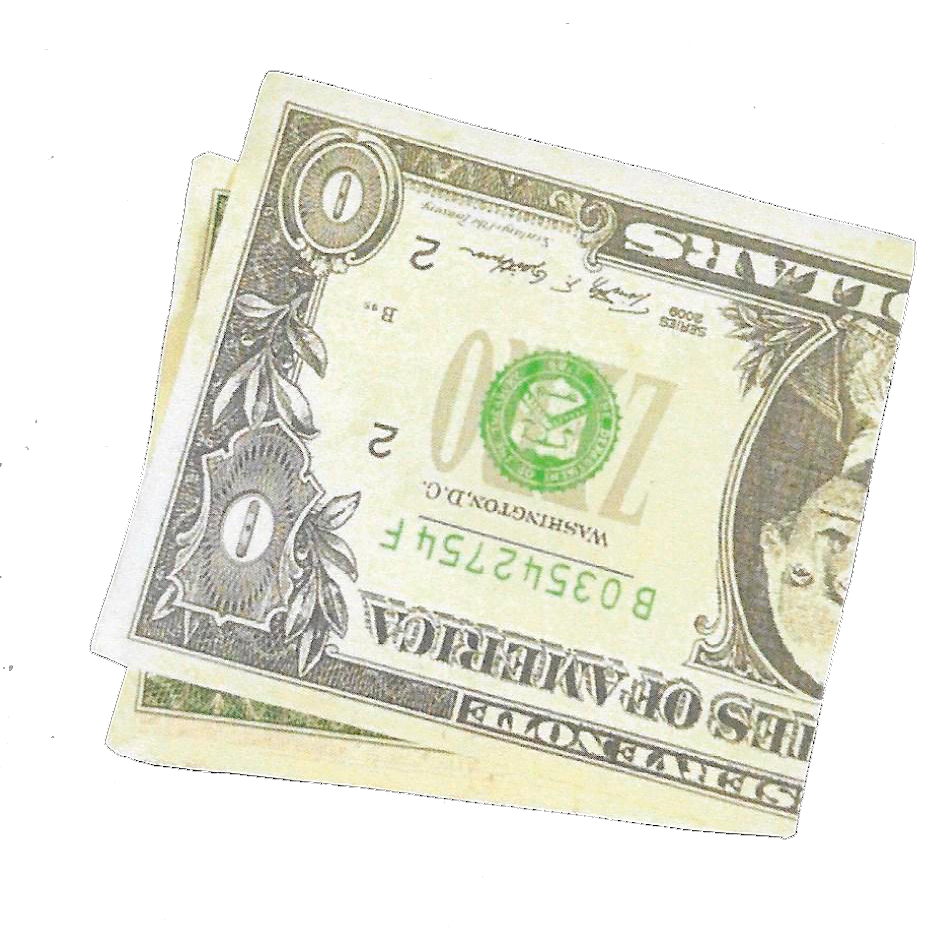
I was a lifeline, a small fortune that could buy freedom for an
evening. But inflation made me worth less each year, and now I'm
worthless, kept only for the memory of what I once could do.
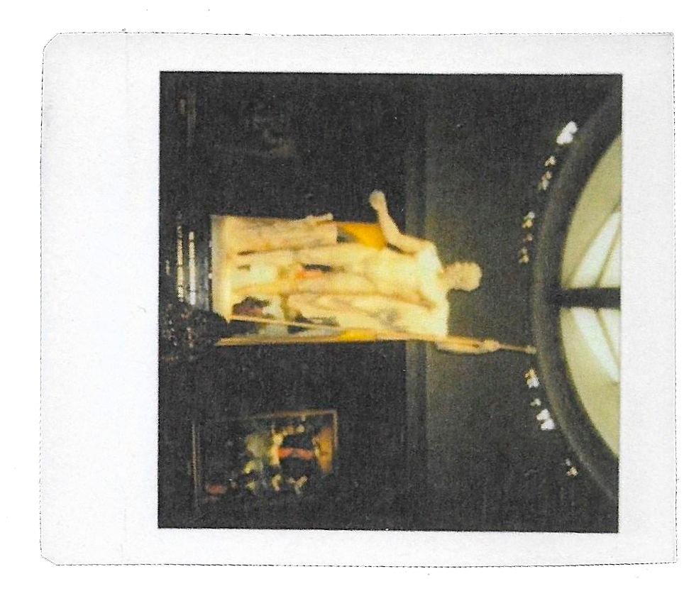
I captured a moment of pure joy, my chemicals freezing a smile
forever. But my colors are fading, the faces becoming strangers.
Memories don't age like photographs do; they only get clearer, while I
only get dimmer.
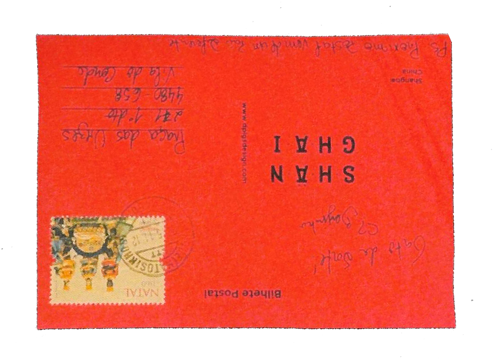
I was written with enthusiasm, stamped and sorted into canvas bags,
but a detour on a conveyor belt or carelessness in some drawer
canceled my trip before the last stop. Now, forgotten in the dark
bottom of a post office cabinet, I hold a "wish you were here" and a
colorful landscape that no one will read, turned into an eternal
secret that will never fulfill the promise of delivering the longing
to whom it rightfully belongs.

I spent months forgotten in a drawer, compressed between useless
papers and rusty paperclips. He only remembered me when I disappeared.
I am a white sheet, crumpled at the corners, with signatures and
coffee stains that prove I was once important. Now I am folded at the
bottom of the wrong folder, listening to the panic on the other side
of the desk. Ahahahhhahahahah

I am an ancient echo, a postcard of history. I was meant to remind
someone of ruins and grandeur, but instead I became a souvenir of a
trip they no longer remember. How fitting for a ruin to itself become
forgotten.
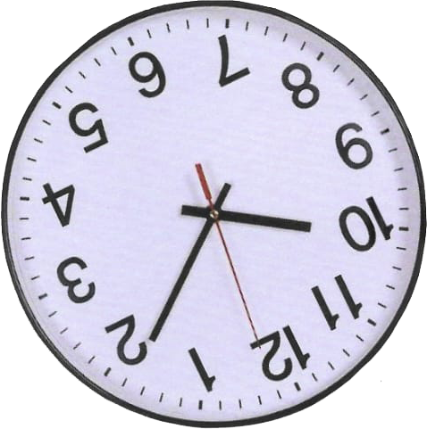
He says he loses me every day. Funny. I never get lost — he is the one
who wastes me. I am invisible, constant, impossible to grasp. And even
so, I always slip away from him.
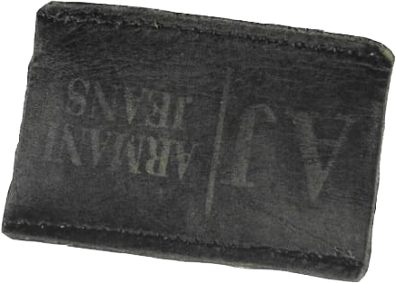
I am luxury, or at least the symbol of it. My leather still smells of
new beginnings and confidence. But I've been empty for months now,
worn not from use but from the weight of pretending to matter more
than I do.
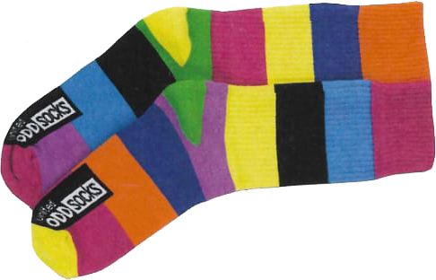
Most people loose one sock out of the pair. We were lost together, before we ever made
it to their home. We never thought it would be like this. So free but also alone. We miss
all the other socks. Suppose you cannot have it all. Do you need socks?
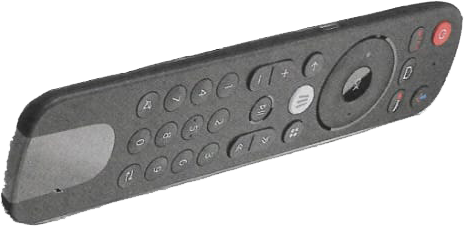
I control everything, or at least I used to. My buttons were pressed
millions of times, commanding entertainment and escape. But now the
batteries are dead, and I sit on the couch, a relic of when people
needed a device to run their lives.
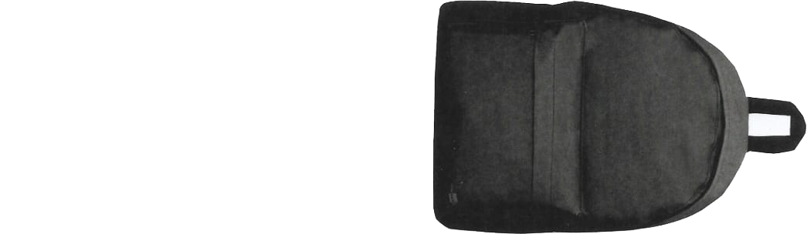
I was built to carry dreams and adventures. My straps bore the weight
of endless possibilities. But now I sit in a closet, dust settling on
my zippers, a monument to ambitions that never left the house.
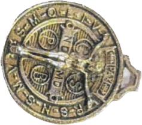
I am currency, but my value has changed. Once I bought something real,
held meaning in an exchange. Now I'm kept for luck, rubbed smooth by
superstitious fingers, more magic than money.
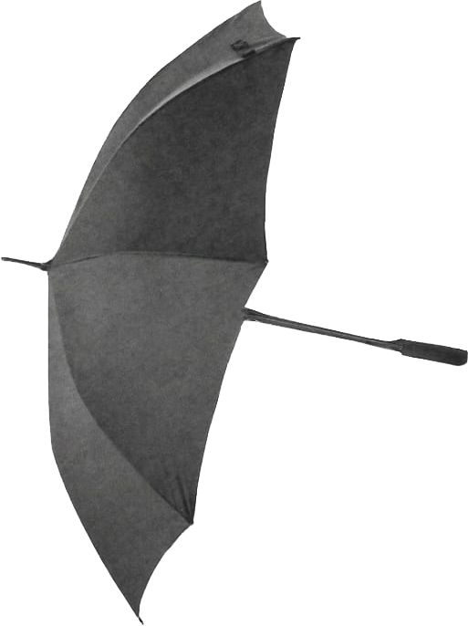
I was protection from the elements, a shelter carried through
countless storms. But I've been left behind on trains and in
restaurants, and each time I waited to be reclaimed. Now I sit in lost
and found, just another umbrella with no one to claim me.
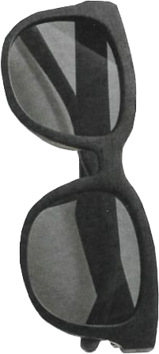
I am a disguise, a way to hide eyes that might reveal too much. I've
seen what she wanted to hide from the world, and she used me to hide
from it too. Now I sit scratched and broken, no longer able to conceal
anything.